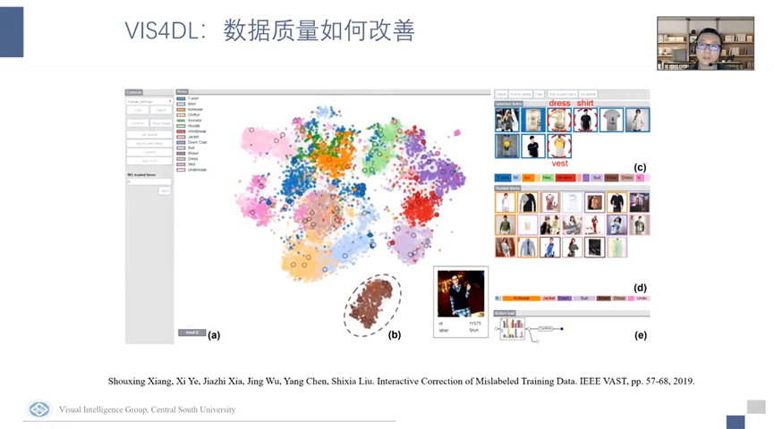
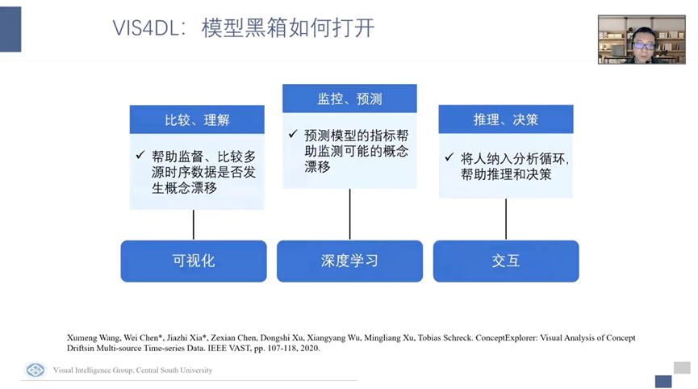
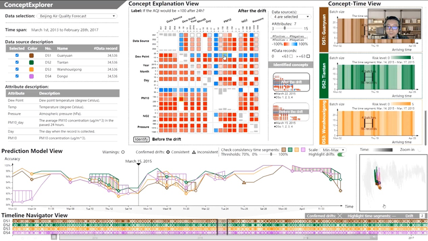
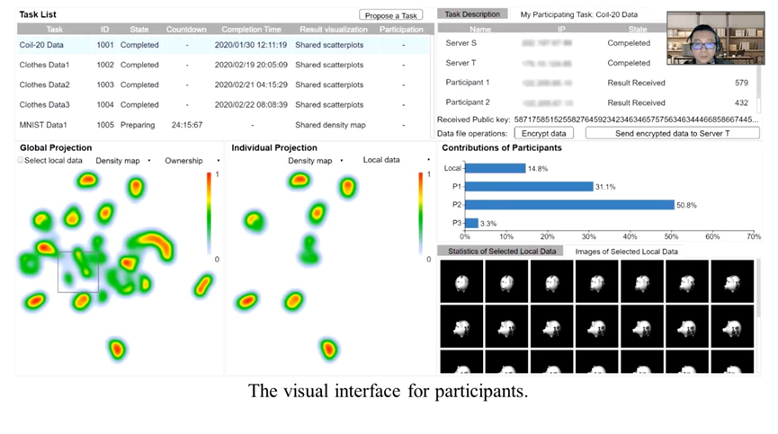
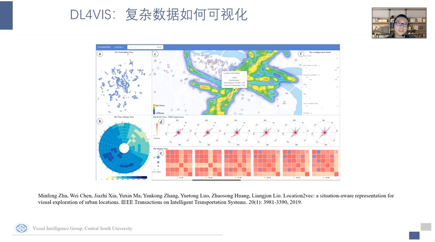
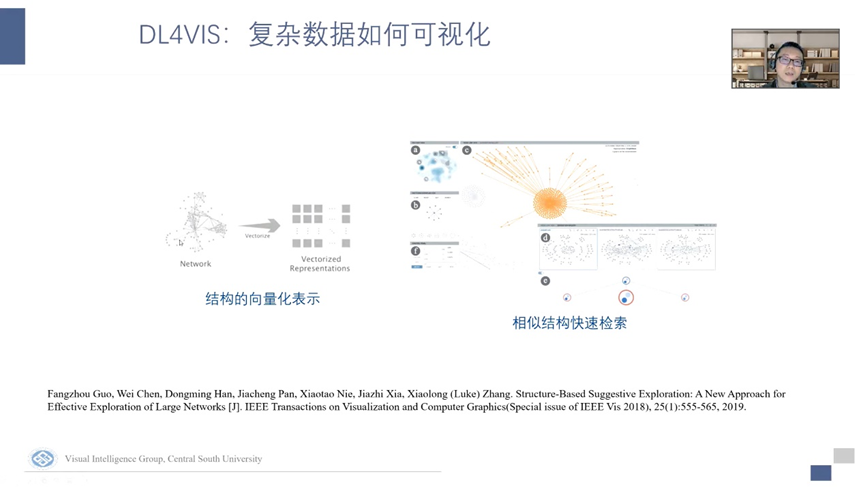
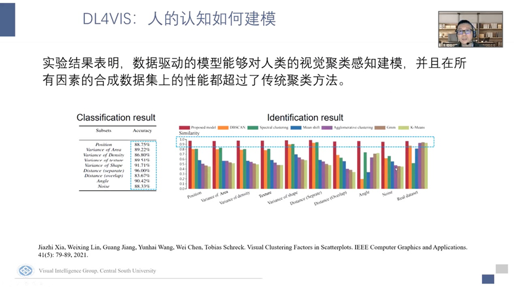

报告嘉宾：夏佳志教授 日期：2022年4月22日 作者：郝佳凝 审核：肖诗诗
2022年4月22日星期五下午，HKUST-CIVAL课题组邀请了中南大学计算机学院夏佳志教授做特邀报告。夏佳志教授在浙江大学计算机学院获得学士学位与硕士学位，并于新加坡南洋理工大学获得博士学位。先后主持国家级重点课题、国家自然科学基金面上项目、青年基金项目、教育部博士点基金项目和湖南省科技计划等项目多项。发表 CCF A 类论文近20篇，获 VIS 2020 最佳论文提名奖，CAD/Graphics 2017 最佳论文奖。曾任ChinaVis 2019-2020 综述共同主席，ChinaVis 2021 论文共同主席，GAMES 2022 程序主席，IEEE VIS、EuroVis、PacificVis IPC Member。
夏佳志教授带来了题为《VIS + Deep Learning》的精彩报告。首先，讲者介绍了可视化与深度学习。深度学习的优势在长于计算，擅长从海量的数据中提取它的特征；同时它的学习能力很强，可以给复杂的数据一个表达；且深度学习具有可迁移性，训练出的模型可以应用到不同的场景中。而可视化的优点是长于表达，充分利用了人的视觉感知能力去感知复杂的数据模式，同时可视化是可交互的，可以将人的推理决策能力纳入分析。两者也都存在着各自的问题与挑战。深度学习存在着数据质量、难以理解的模型参数和数据隐私保护等挑战。可视化面临着难以在其他场景中重用，复杂数据难以可视化以及人的认知如何建模等问题。可以发现，深度学习与可视化各自的优势可以在解决对方挑战时发挥一些作用。

针对这个发现，夏佳志教授从自己的研究出发讲述了深度学习与可视化两者的优势是如何帮助对方解决存在的挑战的。首先，可视化可以帮助深度学习改善数据质量。在深度学习中往往需要很大规模的数据集，而其中往往存在着很多异常情况比如错误的标签。传统的方法需要人一个一个去改正，有很高的人工代价。而利用可视化可以帮助人去探索大规模数据并找出异常情况。讲者介绍了他所在的研究团队与清华大学刘世霞老师的一个合作工作。在可视化方面，他们提出了一个多层次的t-sne，通过多层次的t-sne的探索可以让人由粗到细的去浏览一个大规模数据，并从上到下逐步定位到有问题的区域。在交互方面，他们提出了一个标签的高效传播算法，在人手工的纠正一两个有代表性的样本之后，该算法可以将这个标签扩散到与它类似的一些样本上去，帮助人们更高效的去解决标签错误的问题。图2展示了该工作的系统界面。在经过多轮的迭代纠正后，区分的准确率出现了明显的提升。

针对深度学习的模型黑箱问题。深度学习的模型是难以理解和调试的，首先他的状态空间很庞大，其次他的网络结构非常复杂，且输入的多元时序数据复杂，在认知上具有一定的困难。在在线学习中，最典型的问题就是概念漂移。讲者认为可以引入可视化、深度学习与交互来帮助探索概念漂移的发生（如图3）。讲者介绍了他团队的一个可视分析系统，将人纳入分析循环，帮助进行推理和决策，图4展示了该系统的视图。其中折线图（图4(c)）是提取出来的一些指标，能够帮助人去分析哪些时段可能发生概念漂移，由于是多元时序数据，所以使用每一条线来代表一个数据源。图4(b)视图帮助研究人员选择感兴趣的时间段，图4(e)视图通过相关矩阵帮助研究人员进行比较。


针对深度学习中的数据隐私保护问题。讲者讲到，在联邦学习等一些深度学习应用中，会尝试利用分布在各地的多方数据进行联合训练，通过使用分布式的数据来帮助提升模型的性能。但联邦学习的框架受困于非独立同分布的情况，也就是说在数据分布不一致时，数据的质量与联邦学习的质量都会受到影响。所以我们需要考虑的问题是如何联合调试联邦学习？如何在不泄露数据的情况下诊断数据质量？如何在汇总数据进行分析时不泄露因素数据？讲者介绍了他的研究团队构建的一个基于安全多方投影算法构建的可视分析系统（图5）。通过热力图的展示在避免泄露样本集的隐私的同时观察出数据的分布差异。图5(a)视图展示了网络端如何找到数据拥有方并构建一个联合的投影分析任务。随后构建投影并支持数据的分析与比较。以往的高维数据投影算法并没有在考虑安全性的同时将数据集中起来，而使用安全多方技术可以帮助防止数据的泄露。

探讨完VIS for Deep Learning的三个工作，夏教授又向我们分享了deep learning for vis方面的工作。第一个问题是可视化方法如何重用。讲者介绍了一个基于对比学习的投影方法，他们训练了一个基于深度学习的框架，利用深度学习可以被用到新的数据集上这个一个特征，同时在投影框架中加入了交互，使得用户可以用他的领域知识去改进投影的结果。该种投影方法在可信程度，聚类分离度等各项指标上都表现较好。同时由于该投影框架是基于深度学习的，所以训练好的模型可以用于新的数据，新的样本来了可以直接进行投影而不用像t-sne方法一样需要重新计算。
第二个问题是复杂的数据如何可视化。随着捕获数据、存储数据、表达数据的能力不断的增强，数据本身变得越来越复杂，这也对可视化提出了新的挑战。在这里讲者提出利用深度学习能捕获数据内在结构这样一个能力来对数据进行向量化表示。他介绍了两个与浙江大学合作的工作。第一个工作是包含情景感知的位置向量化表达，这里的原始数据是手机的信令数据，它展示了每个人在城市中的运动轨迹，根据这些轨迹就可以观察出每一个地点是如何被人流串起来。基于此，他们引入了自然语言处理的技术，将一条人流轨迹看成一个句子，每一个地点看成一个词语，将它嵌入到一个高维空间中去，并且将这个空间可视化（图6）。由此可以看出城市中每两个地点之间的语义距离是多少。第二个工作是检索图中的子结构，图中子结构的匹配是一个np难问题，检索计算量很大，计算很慢。但我们在检索时通常不需要精确的检索，而是做一个模糊的检索。这里同样使用了node2vec技术，先把图中的节点根据周围的拓扑信息向量化到一个空间去，在这个空间当中进行类似拓扑结构的搜索并快速的把相似结构找出来（如图7）。


最后一个问题时人的认知应该如何建模。人的认知机制比较复杂，因素较多，所以进行数学建模是很困难的。比如给定一个用颜色编码类别的散点图，让我们去分析散点图中不同类别的视觉分离程度。在VIS领域大家已经提出了几十种模拟人类视觉的评估方法来评估人去观察散点图时能否把两个类分出来。但最近有一篇TVCG的工作比较了这些可计算的度量是不是真的能够反映人的认知，结果发现并不尽如人意，即使是设计的最好的一个度量指标，与人的认知也是有差距的。讲者提出了一个新的思路，既然人工的设计一些指标并不合适，那是否可以使用数据驱动的方式去解决这个问题。先让人去做标记，在做好标记的大量样本中去学习人的认知是什么样子的。首先提取了一系列可能影响到人的视觉认知的因素，并构建了一个包含五万多个散点图的训练集，然后请人对数据集进行标志，在标注后进行分析并训练机器学习模型来学习人的认知。在这里首先进行了统计分析，对候选因素对人的聚类的视觉认知影响程度进行了分析。随后随他进行建模训练了一个散点图的自动聚类识别模型。随后发现这个数据驱动的模型分类的准确程度超过了传统的聚类算法（图8）。

夏教授在讲座的最后分享了自己对深度学习和可视化方面工作的一些认识。首先，他认为可视化正处于新的发展阶段，以前是定制可视分析系统，而现在的论文则有更多数理方法的应用，数据驱动的新思路，以及深度学习的方法，这样的工作越来越成为了可视化研究的主流。第二，可视化是一门交叉的学科，需要我们不断从其他学科中积蓄营养。比如深度学习、数据挖掘、数据安全等领域都会给我们带来新的启发、新的需求或者新的方法。第三，深度学习带给我们的不应该只是计算能力，不应该是对语义的无脑提取，而应该是一种新的思维方式，帮助我们去思考如何简化语义特征的提取过程，让我们从原先的手动设计中跳脱出来，提出新的思维方式。
在提问环节，夏佳志教授和观众进行了热烈的讨论。针对从不同方法中抽象出科研问题的提问，夏教授提到，首先在工作中我们需要关注需求。他使用安全投影问题举例，在调研后他发现现有的方法没有办法对隐私数据进行一个直接的比较，只能采用一些统计的方法，而这样对结果的展示是不方便不直观的。而在可视化分析中，如果想要比较两个数据的分布，往往需要通过投影去直接比较。于是他想到，如果能将两个问题结合起来，如果能在不泄露数据的情况下给出一个联合投影。于是根据这个想法去探索相关的研究分支，最后得到了较好的工作。夏教授指出，科研探索是一步步来的，很多时候东方不亮西方亮，一定要有对问题深刻的了解才能探索出新的问题与方法。